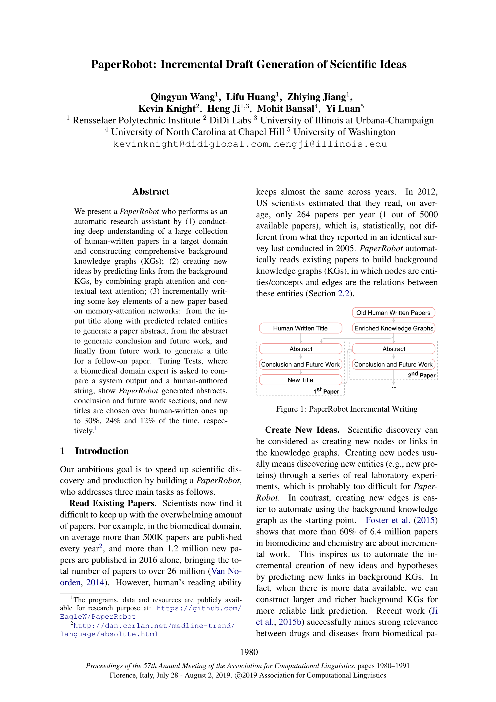
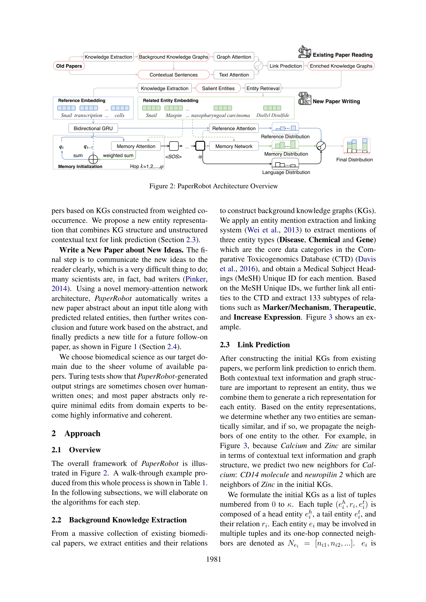
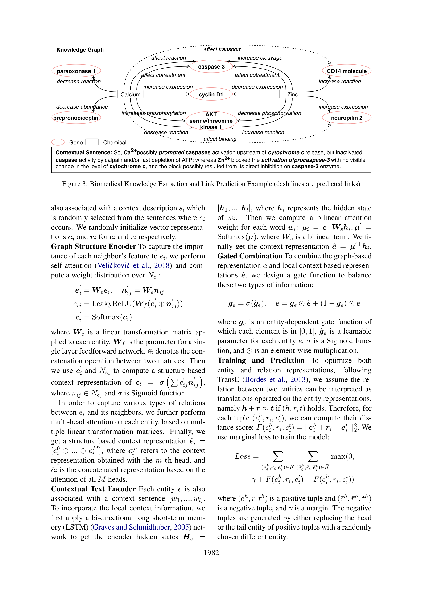

Figure 1

Figure 2
기존 바이오메디컬 논문으로부터 배경 지식 그래프(KG)를 구축하고, 그래프 어텐션과 텍스트 어텐션을 결합한 링크 예측으로 새로운 아이디어를 생성한 뒤, 메모리-어텐션 네트워크를 활용하여 논문의 핵심 요소(제목 -> 초록 -> 결론 및 향후 연구 -> 후속 논문 제목)를 점진적으로 생성하는 자동 연구 보조 시스템 PaperRobot을 제안한다.

Figure 3
PaperRobot은 "AI가 과학 논문을 쓸 수 있는가"라는 질문에 최초로 체계적으로 답하려 한 선구적 연구로서 학술사적 의의가 크다. 2019년 ACL에서 발표된 이 연구는 GPT-2조차 아직 초기 단계였던 시점에 지식 그래프와 뉴럴 텍스트 생성을 결합한 야심찬 시도였다. 특히 "60% 이상의 논문이 점진적 연구"라는 관찰에서 출발하여 링크 예측을 아이디어 생성의 형식화 도구로 활용한 것은 독창적이다. 튜링 테스트에서 초록이 30%의 확률로 인간 작성 텍스트보다 선호된 것은 인상적이나, 이는 주로 바이오메디컬 초록의 정형화된 구조(Background-Methods-Results) 덕분일 가능성이 높다. NLP 도메인 적용 실패 사례를 솔직히 보고한 점은 학술적 정직성 면에서 높이 평가할 만하다. 현재 시점에서 PaperRobot의 기술적 구성 요소(GRU, Mem2Seq, TransE)는 LLM에 의해 대체되었지만, "KG 기반 아이디어 생성 -> 구조화된 논문 작성"이라는 프레임워크 설계는 여전히 유효한 패러다임이며, AI Scientist, CycleResearcher 등 후속 연구의 직접적 선행 연구로 자리매김한다.